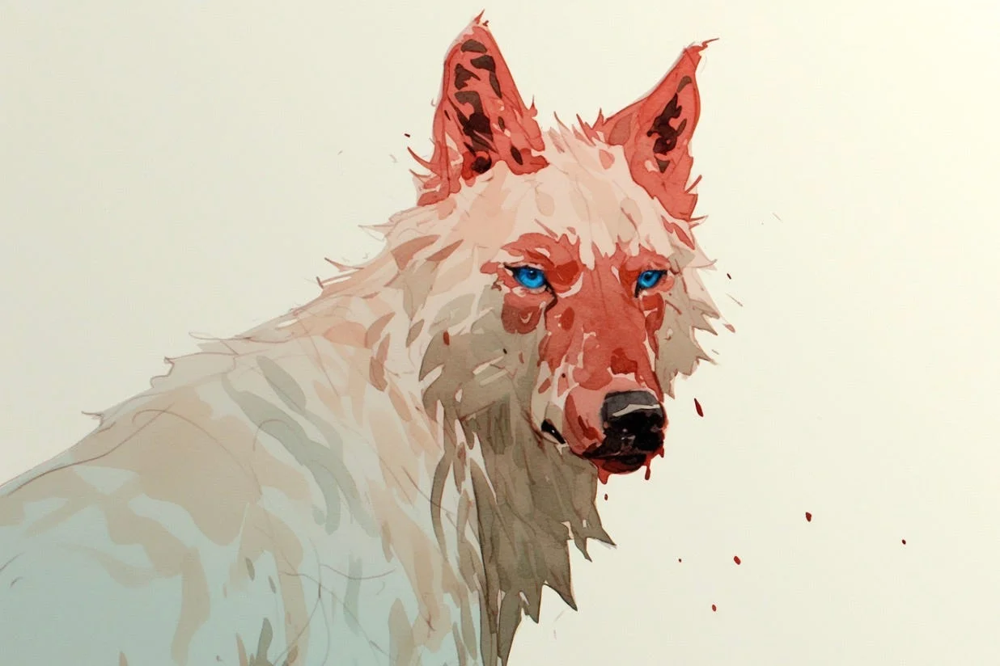

하나는 더 이상 늑대를 보지 않아요.
[Hana doesn’t look at the wolf anymore.]
어렸을 때는 달랐어요. 하나는 늑대의 털에 얼굴을 묻고 잤어요. 늑대의 눈은 파란 달 같았어요. 하나는 무섭지 않았어요. 늑대는 하나의 것이었고, 하나는 늑대의 것이었어요.
[When she was young, it was different. Hana buried her face in the wolf’s fur and slept. The wolf’s eyes were like blue moons. Hana wasn’t afraid. The wolf was hers, and she was the wolf’s.]
약속이 있었어요.
[There was a promise.]
늑대는 기억해요. 하나의 어머니가 죽기 전에 한 말을요. “이 아이를 지켜줘.” 어머니의 손은 차가웠어요. 늑대는 고개를 숙였어요. 약속은 피보다 깊었어요.
[The wolf remembers. The words Hana’s mother spoke before she died. “Protect this child.” The mother’s hand was cold. The wolf bowed its head. The promise was deeper than blood.]
십오 년 동안 늑대는 하나 옆에 있었어요. 하나가 울 때, 늑대는 조용히 옆에 앉았어요. 하나가 웃을 때, 늑대의 꼬리가 움직였어요. 아무도 몰랐어요. 다른 사람들은 늑대를 볼 수 없었어요.
[For fifteen years, the wolf stayed beside Hana. When Hana cried, the wolf sat quietly next to her. When Hana laughed, the wolf’s tail moved. No one knew. Other people couldn’t see the wolf.]
하나만 볼 수 있었어요.
[Only Hana could see it.]
그날 밤, 남자가 왔어요.
[That night, a man came.]
하나는 열여덟 살이었어요. 남자는 하나의 방 창문으로 들어왔어요. 남자의 손에 칼이 있었어요. 하나는 소리를 지르지 못했어요.
[Hana was eighteen. The man came through Hana’s bedroom window. There was a knife in his hand. Hana couldn’t scream.]
늑대는 움직였어요.
[The wolf moved.]
빠르게. 조용하게. 늑대의 이빨이 남자의 목을 물었어요. 피가 나왔어요. 많이 나왔어요. 남자는 쓰러졌어요. 죽었어요.
[Fast. Silent. The wolf’s teeth found the man’s throat. Blood came. A lot of it. The man fell. He died.]
하나는 늑대를 봤어요.
[Hana looked at the wolf.]
늑대의 하얀 털에 빨간 피가 있었어요. 늑대의 파란 눈이 하나를 봤어요. 늑대는 꼬리를 흔들었어요. 예전처럼요.
[There was red blood on the wolf’s white fur. The wolf’s blue eyes looked at Hana. The wolf wagged its tail. Like before.]
하나는 울었어요. 하지만 늑대에게 가지 않았어요.
[Hana cried. But she didn’t come to the wolf.]
그 후로 삼 년이 지났어요.
[Three years have passed since then.]
하나는 이제 스물한 살이에요. 아직 늑대를 볼 수 있어요. 하지만 보지 않아요. 늑대가 방에 들어오면, 하나는 다른 곳을 봐요.
[Hana is twenty-one now. She can still see the wolf. But she doesn’t look. When the wolf enters the room, Hana looks somewhere else.]
늑대는 이해해요.
[The wolf understands.]
늑대의 이빨은 하나를 살렸어요. 그 같은 이빨이 하나를 잃게 했어요.
[The wolf’s teeth saved Hana. The same teeth lost her.]
약속은 지켰어요. 하나는 안전해요.
[The promise was kept. Hana is safe.]
그것으로 충분해야 해요.
[That should be enough.]
매일 밤, 늑대는 하나의 문 앞에 앉아요. 들어가지 않아요. 하나가 자는 소리를 들어요.
[Every night, the wolf sits outside Hana’s door. It doesn’t go in. It listens to Hana sleeping.]
가끔, 하나가 잠을 자면서 말해요. “늑대야.”
[Sometimes, Hana talks in her sleep. “Wolf.”]
늑대의 꼬리가 움직여요.
[The wolf’s tail moves.]
그것으로 충분해요.
[That is enough.]